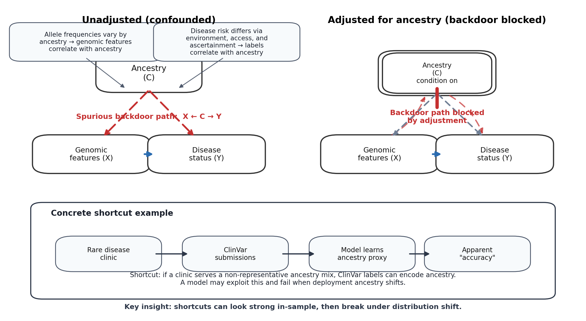
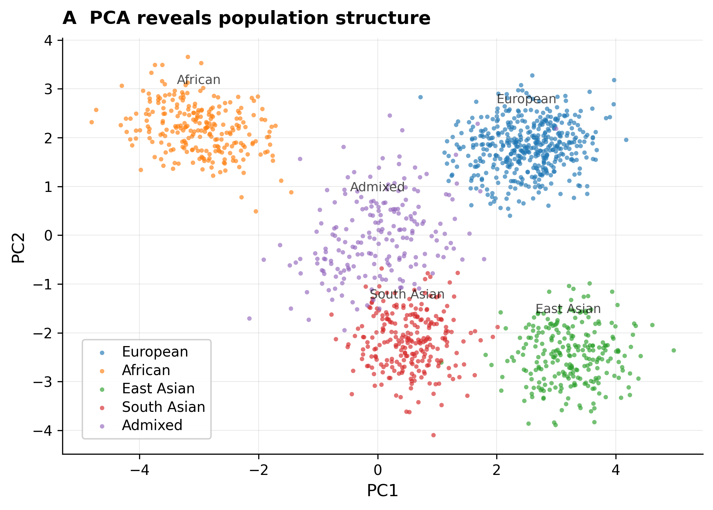
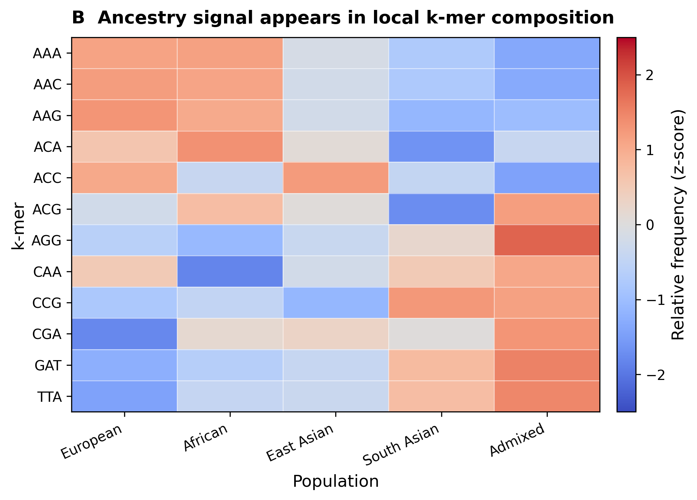
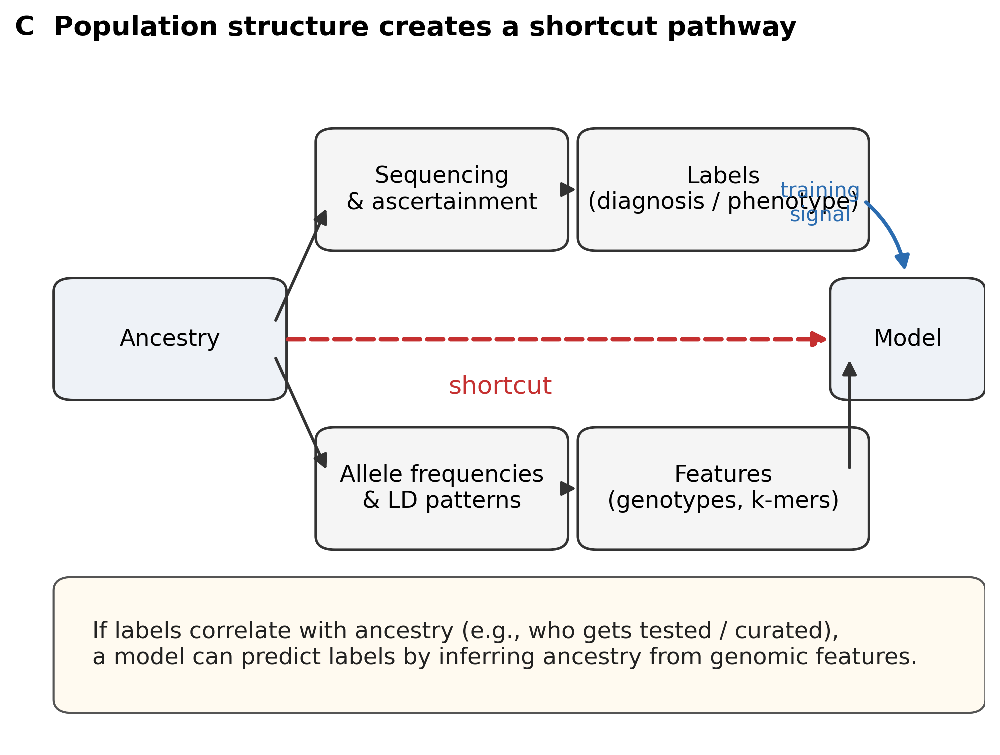
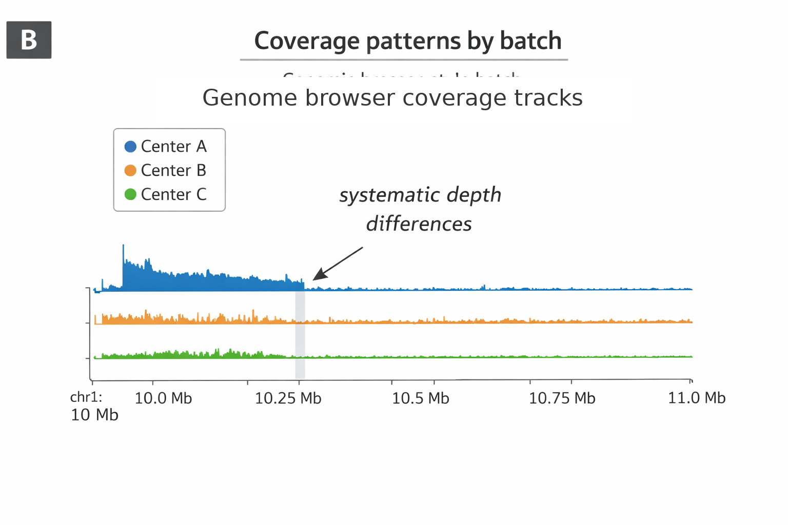
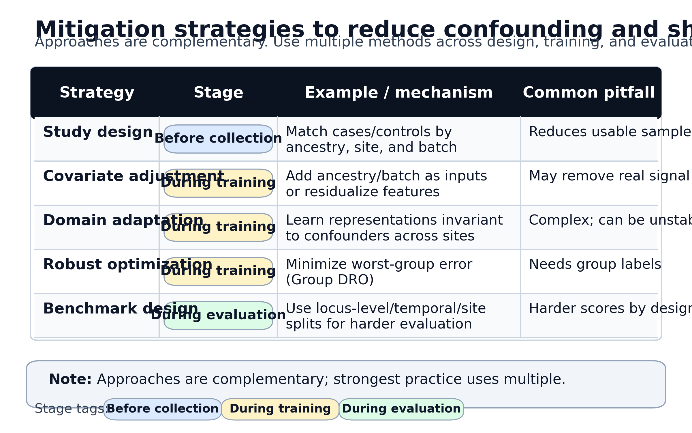

22 Confounders and Leakage
A variant effect predictor trained on ClinVar achieves 0.92 auROC on held-out variants from the same database, yet performance drops to 0.71 when evaluated on a prospectively collected clinical cohort. A polygenic risk score for coronary artery disease stratifies European-ancestry individuals with impressive discrimination, then fails almost completely when applied to individuals of African ancestry. A gene expression model trained on GTEx data predicts tissue-specific patterns with apparent precision, until deployment reveals it learned to distinguish sequencing centers rather than biological states. Each model worked brilliantly in evaluation and failed quietly in practice.
These failures share a common cause: the models learned shortcuts rather than biology. Genomic datasets encode hidden structure from ancestry and family relatedness to sequencing center, capture kit, and label curation protocol. These factors correlate with both features and labels. When such confounders remain uncontrolled, models exploit them. The central challenge is that confounded models can appear to work, sometimes spectacularly well, until they encounter data where the shortcuts no longer apply.
This problem is not unique to deep learning. Linear regression and logistic models suffer from the same biases when fit on confounded data. What makes confounding particularly dangerous in the foundation model era is scale: larger datasets and more expressive architectures make it easier to discover subtle shortcuts that remain invisible in standard diagnostics but cause dramatic failures when distributions shift at deployment. A shallow model might miss the correlation between sequencing center and disease status; a transformer with hundreds of millions of parameters will find it if that correlation helps optimize the training objective.

22.1 Confounding, Bias, and Leakage
The terminology of confounding, bias, and leakage describes distinct phenomena that often co-occur and reinforce each other. Precision in language helps clarify what has gone wrong when a model fails.
A confounder is a variable that influences both the input features and the label. Ancestry provides a canonical example: it affects allele frequencies across the genome (the features) and disease risk through environmental, socioeconomic, and healthcare pathways (the labels). If ancestry is not explicitly modeled or controlled, a model trained to predict disease may learn to identify ancestry rather than disease biology. The prediction appears accurate because ancestry correlates with outcome, but the model has captured correlation rather than mechanism.
Bias refers to systematic deviation from the quantity we intend to estimate or predict. Bias can result from confounding, but also arises from measurement error, label definitions, sampling procedures, or deployment differences. A case-control study with 50% disease prevalence will train models that systematically over-predict risk when deployed in populations where true prevalence is 5%. The model may be perfectly calibrated for the training distribution yet dangerously miscalibrated for clinical use.
Data leakage occurs when information about the test set inadvertently influences model training or selection. Leakage pathways include overlapping individuals or variants between training and evaluation, shared family members across splits, duplicated samples under different identifiers, and indirect channels such as pretraining on resources that later serve as benchmarks. The circularity between computational predictors and ClinVar annotations discussed in Section 4.5 exemplifies this last category: CADD-like scores influence which variants receive pathogenic annotations, and those annotations then become training labels for the next generation of predictors.
Distribution shift describes mismatch between training and deployment data distributions. Shift can be driven by changes in ancestry composition, sequencing technology, clinical coding practices, or temporal trends in care. A model that learns hospital-specific coding patterns will fail when deployed at a different institution, not because the biology differs but because the label generation process does.
For foundation models, these risks are magnified. Genomes encode ancestry, relatedness, and assay conditions in thousands of subtle features, even when those labels are never explicitly provided. Large transformers find shortcuts that smaller models would miss if those shortcuts improve the training objective. Complex training regimes involving pretraining on biobank-scale data, fine-tuning on curated labels, and evaluation on community benchmarks create many opportunities for direct and indirect leakage.
22.2 Sources of Confounding in Genomic Data
Confounders in genomic modeling cluster into several categories, though the same underlying variable (such as recruitment site) may simultaneously induce ancestry differences, batch effects, and label bias. These categories are not mutually exclusive; batch effects in single-cell data (Section 16.6.1) and multi-omic integration (Section 19.7.1) represent domain-specific manifestations of the same underlying challenge.
22.2.1 Population Structure and Relatedness
Ancestry creates perhaps the most pervasive confounders. Continental and sub-continental population structure affects both genomic features and many phenotypes of interest, creating classic confounding. The portability failures of polygenic scores across ancestry groups (Section 3.7) represent one clinically consequential manifestation of this confounding. Family relationships (siblings, parent-offspring pairs, cryptic relatedness detectable only through genotype similarity) and founder effects that create local haplotype structure compound these issues. Relatedness creates a more subtle problem than population stratification: when close relatives appear in both training and test sets, models can memorize shared haplotype segments rather than learning generalizable patterns, producing inflated performance estimates that collapse for unrelated individuals.
22.2.2 Technical Batch Effects
Sequencing and analysis pipelines introduce their own systematic differences. Different instruments produce distinct error profiles. Library preparation protocols vary in GC bias, coverage uniformity, and adapter content. Capture kits determine which genomic regions receive adequate coverage. Alignment algorithms and variant callers make different decisions at ambiguous positions. When samples from a particular batch disproportionately represent a specific label class (cases sequenced at one center, controls at another), models learn to distinguish batches rather than biology.
22.2.3 Institutional and Recruitment Confounding
The institutions where patients receive care introduce additional confounding layers. Hospital systems use distinct coding practices, diagnostic thresholds, and follow-up schedules. The phenotype quality issues that result are examined in Section 2.7, with implications for how models learn from systematically biased labels. Population-based biobanks differ from referral-center cohorts in disease severity, comorbidity patterns, and demographic composition. Individuals who receive genomic testing may be more severely affected, more affluent, or preferentially drawn from particular ancestry groups, introducing selection bias that distorts apparent variant-phenotype relationships.
These sources of confounding trace back to data collection and curation processes. Training data inherit the biases present in the databases from which they derive: ClinVar’s overrepresentation of European ancestry variants (Section 2.8.1), gnomAD’s population composition (Section 2.2.3), and the tissue coverage decisions of consortia like ENCODE and GTEx (Section 2.4.1). Understanding data provenance is prerequisite to anticipating which confounders a model may have learned.
22.2.4 Label Generation Bias
The process of generating ground truth annotations itself creates biases. Clinical labels derived from billing codes or problem lists reflect documentation practices as much as underlying disease. Variant pathogenicity databases exhibit the systematic biases detailed in Section 2.8: ClinVar annotations over-represent European ancestry, well-studied genes, and variants submitted by high-volume clinical laboratories (Landrum et al. 2018). Expression, regulatory, or splicing labels derived from specific tissues or cell lines may not generalize to other biological contexts. The circularity problem identified in Section 4.5 persists into the foundation model era: when model predictions influence which variants receive expert review, and expert classifications become training labels, feedback loops amplify historical biases.
22.2.5 Temporal Drift
Clinical practice, diagnostic criteria, and coding conventions evolve over time. Sequencing technologies and quality control pipelines also change. A model trained on 2015 data may fail on 2024 data not because biology changed but because documentation practices, coding standards, and available treatments all evolved. This temporal drift affects both the features models learn and the labels they predict.
22.2.6 Resource Overlap and Indirect Leakage
Even the resources used for training and evaluation create leakage pathways. When databases like gnomAD or UK Biobank appear in both model training and evaluation, indirect information flows compromise apparent generalization. A foundation model pretrained on gnomAD allele frequencies, then evaluated on a benchmark that uses gnomAD for population filtering, faces indirect leakage even if specific variants do not overlap. Community benchmarks that reuse widely available variant sets across multiple publications create additional leakage pathways that accumulate over time as the field iterates.
22.3 Population Structure as a Shortcut
Population structure represents one of the most pervasive confounders in genomic modeling. The core issue is that ancestry simultaneously affects genomic features and many phenotypes through pathways that have nothing to do with direct genetic causation.
Human genetic variation is structured by ancestry: allele frequencies, haplotype blocks, and linkage disequilibrium patterns differ across populations in ways that reflect demographic history. Principal components computed from genome-wide genotypes provide a low-dimensional summary of this structure and have become standard in genome-wide association studies (GWAS) to correct for stratification (Patterson, Price, and Reich 2006; Price et al. 2006). Yet ancestry is not merely a statistical nuisance. It is intertwined with geography, environment, socioeconomic status, and access to healthcare, factors that directly impact disease risk, likelihood of receiving genetic testing, and the quality of phenotyping when testing occurs.
The statistical genetics community developed these corrections precisely because early genome-wide association studies produced spurious signals driven by ancestry differences between cases and controls rather than causal variant effects (see Section 3.1.4 for detailed treatment of population stratification in association testing). Foundation models face the same fundamental problem in a different guise: ancestry structure that confounded linear regression in GWAS now confounds neural network predictions, and the solutions require similar conceptual foundations even when the technical implementations differ.




Consider a rare disease clinic serving primarily individuals of European ancestry. This clinic contributes most pathogenic variant submissions to ClinVar, while variants observed predominantly in other ancestries remain classified as variants of uncertain significance (Landrum et al. 2018).. A model trained on ClinVar may learn that European-enriched variants tend to have pathogenic labels and non-European-enriched variants tend to have uncertain or benign labels, not because of any biological difference in pathogenicity but because of differential clinical characterization. The model appears to predict pathogenicity while actually predicting ancestry-correlated ascertainment.
Foundation models trained on nucleotide sequences see ancestry information directly: the distribution of k-mers and haplotypes differs by population. When such models are fine-tuned to predict disease risk or variant effects, they may leverage ancestry as a shortcut. Increasing model capacity does not solve this problem; it often makes it worse by enabling detection of increasingly subtle ancestry-linked features. The polygenic score portability literature provides stark evidence: risk scores derived from European ancestry cohorts show 40-75% reductions in prediction accuracy when applied to African ancestry individuals (Duncan et al. 2019). Similar patterns emerge for variant effect predictors and regulatory models, though they are often less thoroughly documented due to limited cross-ancestry evaluation.
This mismatch between the populations used for model development and the populations that would benefit from genomic medicine creates a fundamental tension between current practice and equitable healthcare. Models that work primarily for European ancestry individuals perpetuate existing health disparities, regardless of their benchmark performance. The fairness implications are examined further in Section 22.10.
22.4 Technical Artifacts as Biological Signal
Technical pipelines are complex, and each step from sample collection through final variant calls can introduce systematic differences that models may learn.
Sequencing centers differ in instruments, reagents, and quality control thresholds. Library preparation protocols produce distinct coverage profiles and GC bias patterns. Capture kits determine which genomic regions are well-covered and which have systematic dropout. Read length affects the ability to span repetitive regions and call structural variants. Alignment and variant calling algorithms make different decisions at ambiguous genomic positions.



When samples from a particular batch or platform are disproportionately drawn from a specific phenotype class, models learn to distinguish batches. In high-dimensional feature spaces, even subtle batch-specific artifacts (coverage dips at particular loci, variant density patterns reflecting caller behavior, residual adapter sequences) can become predictive. Foundation models that process raw reads, coverage tracks, or variant streams are particularly vulnerable because batch signatures may be encoded in features that preprocessing would typically remove.
Common patterns suggesting batch confounding include embedding spaces where samples cluster by sequencing center rather than phenotype, strong predictive performance that collapses when evaluated on data from a new platform, and models that can accurately predict batch identity (sequencing center, capture kit, processing date) from inputs that should be batch-independent. When a model designed to predict disease can also predict which laboratory processed the sample, something has gone wrong.
22.5 Label Bias and Circularity
Labels in genomic applications rarely represent ground truth in any absolute sense. They represent the outputs of complex processes involving clinical documentation, expert review, computational prediction, and database curation. These processes introduce biases that models absorb and may amplify.
Clinical phenotypes derived from electronic health records inherit the limitations of medical documentation. Billing codes capture what was reimbursable, not necessarily what was present. Problem lists reflect what clinicians chose to document, which varies by specialty, institution, and individual practice patterns. Diagnostic criteria change over time, creating apparent temporal trends in disease prevalence that reflect evolving definitions rather than changing biology.

Variant pathogenicity labels illustrate the problem of circularity. ClinVar aggregates submissions from clinical laboratories, research groups, and expert panels (Landrum et al. 2018). The evidence underlying these submissions often includes computational predictions: a laboratory may cite CADD, REVEL, or other predictors as supporting evidence for a pathogenic classification. When the next generation of predictors trains on ClinVar, it learns to replicate the computational predictions that contributed to those labels. Performance on ClinVar-derived benchmarks thus reflects, in part, agreement with previous predictors rather than independent biological insight.
This circularity extends across the ecosystem of genomic resources. gnomAD allele frequencies inform variant filtering in clinical pipelines. UK Biobank genotype-phenotype associations shape which variants receive functional follow-up. Structural annotations from ENCODE and Roadmap Epigenomics influence which regulatory regions are considered biologically important. Foundation models pretrained on these resources, then evaluated against benchmarks derived from the same resources, may achieve impressive scores while learning to reproduce the assumptions and biases of existing annotations rather than discovering new biology.
22.6 Data Splitting
Data splitting is among the primary tools for assessing generalization, yet naive splits can silently permit leakage that inflates apparent performance.
22.6.1 Random Individual-Level Splits
Random individual-level splits assign samples randomly to training, validation, and test sets. This approach fails when samples are not independent: family members may appear on both sides of a split, allowing models to memorize shared haplotypes. Rare variant analysis is particularly vulnerable because disease-causing variants may be private to specific families, and memorizing which families have which variants is far easier than learning generalizable sequence-function relationships.
22.6.2 Family-Aware Splits
Family-aware splits address relatedness by ensuring that all members of a family appear in the same split. This prevents direct memorization of family-specific variants but does not address population structure (ancestry groups may remain imbalanced across splits) or other confounders.
22.6.3 Locus-Level Splits
Locus-level splits hold out entire genomic positions, ensuring that no variant at a test position appears during training. This stringent approach prevents models from memorizing site-specific patterns and is essential for variant effect prediction where the goal is to score novel variants at positions the model has never seen. Many published benchmarks fail to implement locus-level splitting, allowing models to achieve high scores by recognizing familiar positions rather than learning generalizable effects. The evaluation considerations in Section 21.4 address these issues in detail.
22.6.4 Region and Chromosome Splits
Region or chromosome splits hold out entire genomic regions, testing whether models learn biology that transfers across the genome rather than region-specific patterns. This is particularly relevant for regulatory prediction, where local chromatin context may differ between regions.
22.6.5 Cohort and Site Splits
Cohort or site splits hold out entire institutions, sequencing centers, or biobanks, directly testing robustness to the batch and cohort effects discussed above. Models that perform well only within their training cohort but fail on held-out cohorts have learned institution-specific patterns.
22.6.6 Temporal Splits
Time-based splits use temporal ordering, training on earlier data and evaluating on later data. This approach simulates prospective deployment and tests robustness to temporal drift. A model trained on 2018 data and evaluated on 2023 data faces realistic distribution shift that random splits would obscure.
22.6.7 Indirect Leakage Across Resources
Beyond explicit split design, indirect leakage remains a concern. A variant that appears in ClinVar may also appear in gnomAD (with population frequency information), in functional assay datasets (with splicing or expression effects), and in literature-derived databases (with disease associations). Pretraining on any of these resources while evaluating on another creates indirect information flow that standard deduplication would miss.
22.7 Data Leakage as Confounding
Data leakage can be understood as a special case of confounding where the confounder is information that should not exist at prediction time. This framing clarifies why leakage inflates performance estimates and why leaked models fail in deployment: they have learned associations with variables that are unavailable when predictions must actually be made.
The detailed taxonomy of leakage types (label, feature, temporal, and benchmark leakage) along with detection strategies is provided in Section 21.4. Here we examine how each leakage type creates confounding structures that distort model evaluation.
22.7.1 Causal Structure of Leakage
In causal terms, leakage introduces a backdoor path between features and labels that does not represent the relationship we intend to model. Consider a pathogenicity predictor trained with conservation scores that were computed using alignments incorporating known pathogenic variants. The causal structure includes: (1) the intended path from sequence features through biological mechanism to pathogenicity, and (2) a leaked path from pathogenicity labels through their influence on conservation databases back to conservation features. The model cannot distinguish signal flowing through these two paths, and performance estimates reflect both.
Label leakage creates confounding when the process that generated labels also influenced feature construction. The confounder is the shared information source: ClinVar curators who used computational predictions created a dependency between those predictions and subsequent labels. Feature leakage creates confounding when features correlate with labels through non-causal pathways, such as batch effects that happen to align with case-control status. Temporal leakage creates confounding through time-dependent information flow: future knowledge that influenced either features or labels introduces associations that would not exist in prospective application.
22.7.2 Compounding Effects
These leakage types interact and compound. A model suffering from multiple forms may achieve extraordinary benchmark performance while learning nothing transferable to prospective clinical use. The apparent signal is real within the leaked evaluation framework but spurious for the intended application.
Consider a variant effect predictor that uses conservation scores (feature leakage), was trained on ClinVar labels influenced by earlier predictors (label leakage), and is evaluated on a benchmark constructed using similar computational methods (benchmark leakage). Each leakage type independently inflates performance; together, they create an evaluation that measures something entirely different from prospective predictive ability.
22.7.3 Implications for Confounding Analysis
The confounding framework suggests that leakage detection methods (described in Section 21.4) can be understood as strategies for identifying and blocking backdoor paths. Feature ablation removes variables that may carry leaked signal. Temporal validation eliminates paths that depend on future information. Baseline analysis reveals when simple confounders explain most of the apparent performance.
This perspective also clarifies why some apparent leakage may be acceptable. If conservation scores will always be available at prediction time, the path through conservation represents legitimate signal rather than confounding. The distinction depends on the deployment context: what information will actually be available when the model must make predictions? Leakage is confounding by information that exists in evaluation but not in application.
22.8 Detecting Confounding
Confounding is often subtle, requiring systematic diagnostics rather than reliance on aggregate performance metrics.
22.8.1 Confounder-Only Baselines
The most direct diagnostic trains simple models using only potential confounders: ancestry principal components, batch indicators, sequencing center identifiers, recruitment site. If these confounder-only baselines approach the performance of complex genomic models, confounding likely drives a substantial portion of the signal. Reporting confounder-only baselines alongside genomic model results makes hidden shortcuts visible.
22.8.2 Stratified Performance Analysis
Performance stratified by ancestry group, sequencing platform, institution, and time period reveals whether aggregate metrics mask heterogeneity. Both discrimination (auROC, area under the precision-recall curve (auPRC)) and calibration diagnostics should be computed for each subgroup. Models may achieve high overall auROC while being poorly calibrated or nearly useless for specific subpopulations. Performance that varies dramatically across subgroups suggests confounding or distribution shift even when overall metrics appear strong.
22.8.3 Residual Confounder Associations
Associations between model outputs and potential confounders can reveal encoding of ancestry or batch information beyond what the label requires. Plotting predictions against ancestry principal components, adjusting for true label status, shows residual confounding. Comparing mean predicted risk across batches or time periods within the same true label class identifies systematic biases. Formal association tests (regression, mutual information) between predictions and confounders that show strong residual associations indicate the model has learned confounder-related features that go beyond predicting the label itself.
22.8.4 Split Sensitivity Analysis
Varying the splitting strategy probes for leakage. Re-evaluating performance under locus-level splits, cohort holdouts, or temporal splits reveals whether initial results depended on memorization. A model that achieves 0.90 auROC with random splits but only 0.75 auROC with locus-level splits has likely memorized site-specific patterns. Large drops in performance under stricter splitting indicate inflated initial results.
22.8.5 Negative Control Outcomes
Using outcomes known to be unrelated to genomics as negative controls provides powerful confirmation of confounding. If a model trained to predict disease from genotypes can also predict administrative outcomes (insurance type, documentation completeness) with similar accuracy, it has learned confounders. Shuffling labels within batch or ancestry strata should eliminate predictive signal; if it does not, the model exploits structure that transcends any specific outcome.
22.9 Mitigation Strategies
No mitigation strategy eliminates confounding entirely, and each involves trade-offs between bias, variance, and coverage. The approaches described here are complementary: design-based methods constrain confounding before modeling begins, statistical adjustments handle residual confounding, invariance learning provides protection when confounders are incompletely measured, and rigorous benchmark construction ensures that evaluation reflects generalization rather than shortcut learning.

22.9.1 Study Design and Cohort Construction
Design-based approaches provide the most robust protection against confounding because they prevent the problem rather than attempting to correct it statistically. When cases and controls are matched on potential confounders before data collection, those variables cannot drive spurious associations regardless of model complexity.
Matching strategies balance cases and controls on age, sex, ancestry, recruitment site, and sequencing platform. For ancestry, matching can use self-reported categories, genetic principal components, or fine-scale population assignments depending on the granularity required. Exact matching (requiring identical values) provides the strongest protection but may be infeasible when confounders are continuous or when the pool of potential controls is limited. Propensity score matching or coarsened exact matching offer practical alternatives that achieve approximate balance across multiple confounders simultaneously.
Balanced sampling during training prevents models from optimizing primarily for majority patterns. When one ancestry group comprises 80% of training data, gradient updates predominantly reflect that group’s patterns, and minority group performance suffers. Down-sampling the majority group or up-sampling minority groups within mini-batches ensures that all groups contribute meaningfully to parameter updates. The trade-off is reduced effective sample size: discarding majority group samples wastes information, while up-sampling minority groups risks overfitting to limited examples.
Prospective collection with diversity targets ensures that training data represent the populations where models will be deployed. Retrospective matching can balance existing cohorts but cannot address variants or patterns that are absent from the original collection. The All of Us Research Program, Million Veteran Program, and similar initiatives that prioritize ancestral diversity from inception provide data that enable genuinely generalizable models, though the genomic AI field has yet to fully leverage these resources.
The limitation of design-based approaches is that they must anticipate which variables will confound. Unknown or unmeasured confounders cannot be matched, and over-matching (matching on variables that are consequences of the exposure) can introduce bias rather than remove it. Design and analysis approaches work best in combination: match on known confounders, then adjust for residual imbalances that matching did not eliminate.
22.9.2 Covariate Adjustment
Covariate adjustment explicitly models confounders rather than ignoring them, allowing estimation of outcome effects that account for confounding variables. The approach is familiar from genome-wide association studies, where including ancestry principal components as covariates in regression models reduces spurious associations driven by population structure.
For foundation models, covariate adjustment takes several forms. The simplest approach includes confounder variables (ancestry PCs, batch indicators, sequencing platform) as additional input features alongside genomic data. The model learns to use confounder information when predicting outcomes, and the genomic feature coefficients or attention weights reflect associations that remain after accounting for confounders. This approach assumes the model can learn the appropriate adjustment; for complex confounding patterns, explicit modeling may be preferable to implicit learning.
Residualization removes confounder-associated variance before training genomic models. Regressing features or phenotypes on confounders and retaining only the residuals ensures that subsequent models cannot exploit confounder-outcome associations. The risk is removing genuine biological signal when confounders correlate with causal variants. Ancestry principal components, for instance, capture population structure that includes both confounding (differential ascertainment) and biology (population-specific genetic architecture). Aggressive residualization may discard the latter along with the former.
Mixed models and hierarchical structures treat institution, batch, or ancestry group as random effects, estimating genomic associations while accounting for clustering within groups. This approach is standard in genetic epidemiology and translates naturally to deep learning through hierarchical Bayesian frameworks or explicit modeling of group-level parameters. The key advantage is borrowing strength across groups while allowing group-specific intercepts or slopes, though computational costs increase substantially for large datasets with many groups.
The fundamental limitation of covariate adjustment is that it requires measuring and correctly specifying confounders. Unmeasured confounders remain uncontrolled. Conditioning on colliders (variables caused by both exposure and outcome) introduces bias rather than removing it. Careful causal reasoning, often formalized through directed acyclic graphs, is essential for determining which variables should be adjusted and which should not.
22.9.3 Domain Adaptation and Invariance Learning
Domain adaptation methods aim to learn representations that do not encode confounders, achieving predictions that generalize across batches, institutions, or populations without explicitly modeling each source of variation. These approaches are particularly valuable when confounders are numerous, incompletely measured, or difficult to specify.
Adversarial training adds a discriminator network that attempts to predict batch identity, ancestry, or other confounders from learned representations. The feature extractor is trained with two competing objectives: maximize prediction accuracy for the primary task while minimizing the discriminator’s ability to recover confounder labels. When successful, the learned representations retain information useful for prediction while discarding information that distinguishes confounded groups. Domain adversarial neural networks and gradient reversal layers implement this approach efficiently within standard deep learning frameworks.
The theoretical limitation is that perfect invariance and maximum accuracy cannot be achieved simultaneously when confounders correlate with the outcome through both causal and non-causal pathways. Enforcing strict invariance to ancestry, for instance, may remove genuine population-specific genetic effects along with confounding. Practitioners must balance the degree of invariance against task performance, typically through hyperparameters controlling the adversarial loss weight.
Group distributionally robust optimization (group DRO) targets worst-group performance rather than average performance, encouraging models that work for all subgroups rather than optimizing for the majority. The training objective minimizes the maximum loss across predefined groups (ancestry categories, sequencing platforms, institutions), ensuring that no group is systematically disadvantaged. This approach requires group labels during training and may sacrifice some average performance to improve worst-case outcomes.
Importance weighting and distribution matching align feature distributions across domains without explicit adversarial training. Samples from underrepresented domains receive higher weights during training, or feature distributions are explicitly matched through maximum mean discrepancy or optimal transport objectives. These methods can be combined with other approaches and are particularly useful when the target deployment distribution is known but differs from training data.
22.9.4 Data Curation and Benchmark Design
The signals available for learning depend entirely on how data are curated and how benchmarks are constructed. Careful attention to data provenance and evaluation design prevents many confounding problems that would otherwise require complex modeling solutions.
Deduplication across training and evaluation sets prevents direct memorization. For genomic data, deduplication must operate at multiple levels: individual samples (the same person appearing under different identifiers), family groups (relatives sharing haplotype segments), and genomic loci (the same variant position appearing in both training and test sets). Variant effect prediction requires particularly stringent locus-level deduplication; a model that has seen any variant at position chr1:12345 during training cannot be fairly evaluated on novel variants at that position.
Splitting strategies determine what generalization is actually tested. Random splits assess interpolation within the training distribution. Locus-level splits test generalization to novel genomic positions. Chromosome holdouts test transfer across genomic regions. Cohort splits test robustness to institutional and demographic differences. Temporal splits simulate prospective deployment. Each strategy answers a different question, and benchmark performance under one splitting regime does not guarantee performance under others. Reporting results across multiple splitting strategies reveals which aspects of generalization a model has achieved. The comprehensive treatment of benchmark design in Chapter 20 addresses these considerations in detail.
Benchmark diversity ensures that evaluation reflects the full range of deployment contexts. Benchmarks constructed from a single ancestry group, institution, or sequencing platform test only narrow generalization. Explicitly including diverse ancestries, multiple institutions, and varied technical platforms in evaluation sets reveals performance heterogeneity that homogeneous benchmarks would hide. The ProteinGym and CASP benchmarks in protein modeling demonstrate how thoughtfully constructed evaluation resources can drive genuine progress; genomic variant interpretation would benefit from similar community efforts.
Documentation of overlaps between training resources and benchmarks enables readers to assess potential leakage. When a foundation model is pretrained on gnomAD, fine-tuned on ClinVar, and evaluated on a benchmark that filters variants using gnomAD frequencies, the information flow is complex and potentially circular. Explicit documentation of which resources contributed to which stages of model development allows appropriate skepticism about performance claims. Benchmark papers should catalog known overlaps with major training resources; model papers should acknowledge which benchmarks may be compromised by their pretraining choices.
22.9.5 Causal Inference Approaches
When observational confounding cannot be eliminated through design or statistical adjustment, causal inference frameworks offer principled alternatives that leverage the structure of genetic inheritance itself.
The random assortment of alleles at meiosis creates natural experiments that Mendelian randomization exploits (Davey Smith and Ebrahim 2003). Because genotypes are assigned before birth and cannot be influenced by most environmental confounders, genetic variants that affect an exposure (such as a biomarker level or gene expression) can serve as instrumental variables for estimating causal effects on downstream outcomes. A foundation model trained to predict expression levels can be evaluated for causal relevance by testing whether its predictions, instrumented through genetic variants, associate with disease outcomes in ways that survive Mendelian randomization assumptions. This approach has revealed that many observational biomarker-disease associations reflect confounding rather than causation, and similar logic applies to model-derived predictions.
Directed acyclic graphs (DAGs) formalize assumptions about causal structure and clarify which variables should be adjusted, which should be left unadjusted, and which adjustments would introduce bias rather than remove it (Pearl 2009). Conditioning on a collider (a variable caused by both exposure and outcome) induces spurious associations; conditioning on a mediator blocks causal pathways of interest. Explicit DAG construction forces researchers to articulate their causal assumptions, making hidden confounding visible and enabling principled variable selection. For genomic models, DAGs clarify the relationships among ancestry, technical factors, biological mechanisms, and phenotypic outcomes, revealing which adjustment strategies address confounding versus which inadvertently condition on consequences of the outcome.
Outcomes and exposures known to be unrelated to the prediction target provide empirical tests of residual confounding without requiring complete causal knowledge (Lipsitch, Tchetgen Tchetgen, and Cohen 2010). A negative control outcome is one that should not be causally affected by the exposure of interest; if the model predicts it anyway, confounding is present. A negative control exposure is one that should not causally affect the outcome; association with the outcome again indicates confounding. For a variant effect predictor, administrative outcomes (insurance status, documentation completeness) serve as negative control outcomes that genotypes should not predict. Synonymous variants in non-conserved regions can serve as negative control exposures that should not affect protein function. Strong predictions for negative controls reveal that the model has learned confounders rather than biology.
These causal approaches do not replace careful study design and rigorous splitting, but they provide additional tools for distinguishing genuine biological signal from confounded associations, particularly when the same observational data must serve both training and evaluation purposes.
22.10 Fairness and External Validity
Confounding connects directly to fairness and health equity. Models that achieve high average performance while failing for specific populations may appear successful while exacerbating existing disparities.
Polygenic risk scores illustrate this tension. European ancestry-derived scores predict cardiovascular disease, diabetes, and breast cancer risk reasonably well within European ancestry populations. Applied to African or Asian ancestry individuals, the same scores show substantially worse discrimination and calibration (Duncan et al. 2019). Healthcare systems that deploy these scores without ancestry-specific validation risk providing inferior risk stratification to already underserved populations. The portability analysis framework in Section 3.7 quantifies these degradations, while clinical deployment frameworks (Section 25.8) address operational responses.
Variant interpretation exhibits similar patterns. ClinVar contains many more pathogenic variant classifications for European ancestry individuals than for other populations (Landrum et al. 2018). The data composition issues underlying this imbalance are examined in Section 2.8.1. Predictors trained on ClinVar inherit this imbalance, performing better for variants common in European populations and worse for variants enriched in other ancestries. Clinical deployment of such predictors may reduce diagnostic yield for non-European patients.
The uncertainty quantification approaches discussed in Chapter 23 provide partial mitigation: models that report high uncertainty for under-represented populations at least flag predictions that should not be trusted. Out-of-distribution detection methods (Section 23.6) specifically address when inputs fall outside the training distribution. The interpretability methods in Chapter 24 can reveal when models rely on ancestry-correlated features, with attribution analysis (Section 24.1) identifying which input features drive ancestry-dependent predictions. Yet technical solutions alone are insufficient. Addressing fairness requires intentional data collection that prioritizes under-represented populations, evaluation protocols that mandate subgroup analysis, and deployment decisions that consider equity alongside aggregate accuracy.
External validity asks whether a model’s performance in one setting predicts its performance in another. Confounding and distribution shift often cause dramatic external validity failures. A model that achieves excellent metrics in the development cohort may fail when deployed at a different institution, in a different healthcare system, or in a different country. The clinical risk prediction frameworks in Section 25.9 emphasize multi-site validation precisely because single-site performance frequently fails to generalize.
The fairness implications of confounding extend beyond technical model performance into questions of justice in healthcare resource allocation, diagnostic equity, and the distribution of benefits from genomic medicine. Governance frameworks for addressing these structural challenges are examined in Chapter 29.
22.11 A Practical Checklist
The following checklist synthesizes the diagnostics and mitigations discussed above. Systematic application during model development and evaluation surfaces confounding that would otherwise remain hidden.
Population structure and relatedness: Quantify ancestry via principal components and relatedness via kinship coefficients. Decide explicitly whether to match, stratify, or adjust for these factors, and document the justification. Report performance stratified by ancestry group. When family structure exists in the data, verify that relatives do not appear across train-test boundaries.
Data splits and leakage: Ensure individuals, families, and genomic loci do not cross the train-validation-test boundaries for target tasks. Implement stricter splits (locus-level, chromosome-level, cohort-based, time-based) and report the performance differences. Check for overlap with external databases or benchmarks used in evaluation and document any shared resources.
Batch, platform, and cohort effects: Catalog technical variables (sequencing center, instrument, protocol, assay) and cohort identifiers. Test whether these variables predict labels or align with subgroups of interest. Use embedding visualizations, principal components, or simple classifiers to detect batch signatures. Apply mitigation (design matching, covariate adjustment, domain adaptation) when batch effects are detected.
Label quality and curation bias: Document how labels were defined and what processes (billing codes, expert review, computational prediction, registry inclusion) produced them. Quantify label noise where possible. Consider robust training strategies when labels are noisy. Assess how curated resources like ClinVar reflect historical biases and whether those biases affect evaluation validity.
Cross-group performance and fairness: Report metrics for each major subgroup (ancestry, sex, age, cohort, platform) rather than only aggregate performance. Examine calibration across groups, not just discrimination. Discuss clinical implications of residual performance gaps and whether deployment might worsen existing disparities.
Reproducibility and transparency: Document dataset construction, inclusion criteria, and splitting strategies completely. Release preprocessing, training, and evaluation code when feasible. Describe which confounders were measured, how they were handled, and what limitations remain.
Models that pass this checklist provide more reliable evidence of genuine biological learning. Models that fail at multiple points may achieve benchmark success while learning shortcuts that will not transfer to new settings.
22.12 Rigor as Response
These confounding and bias problems are not reasons for despair. They are reasons for rigor. The same expressive capacity that enables foundation models to discover subtle shortcuts also enables them to learn complex biological patterns when training data and evaluation protocols are designed appropriately. The goal is not to abandon powerful models but to create conditions under which their power serves biological discovery rather than benchmark gaming.
Several trends support progress. Multi-ancestry biobanks and international collaborations expand the diversity of available training data. Benchmark developers implement stricter splitting protocols and require subgroup analyses. Pretraining strategies that explicitly promote invariance to technical factors are emerging. Uncertainty quantification methods (Chapter 23) provide mechanisms for models to express appropriate caution when inputs fall outside their training distribution. The problem of confounding is tractable with sustained attention to data provenance, evaluation design, and deployment monitoring. The benchmark catalog in Chapter 20 identifies which evaluation resources are most susceptible to particular confounders, while the evaluation methodology in Chapter 21 provides protocols for detecting leakage before it inflates reported performance.
Yet vigilance remains essential. New datasets bring new confounders. Novel architectures create new opportunities for shortcut learning. Community benchmarks accumulate indirect leakage as resources are reused across studies. Treating confounding as a first-order concern throughout model development, rather than an afterthought addressed only when reviewers complain, distinguishes models that actually work from models that merely perform well on convenient benchmarks. The interpretability methods in Chapter 24 provide tools for distinguishing genuine regulatory insight from sophisticated pattern matching, with mechanistic interpretability (Section 24.7) offering the strongest evidence about what models have actually learned. The uncertainty quantification approaches in Chapter 23 enable models to communicate when their predictions should not be trusted, with selective prediction (Section 23.7) providing operational frameworks for routing uncertain cases to human review. Together with rigorous evaluation, these capabilities move the field toward models that reveal genuine biology and behave reliably across the diverse clinical and scientific settings where they will be deployed.